NO Domain Trust Framework ("Nasjonalt tillitsrammeverk") AuditEvent Implementation Guide
0.9.6 - ci-build
NO Domain Trust Framework ("Nasjonalt tillitsrammeverk") AuditEvent Implementation Guide - Local Development build (v0.9.6) built by the FHIR (HL7® FHIR® Standard) Build Tools. See the Directory of published versions
| Official URL: http://hl7.no/fhir/ImplementationGuide/hl7.fhir.no.domain.auditevent | Version: 0.9.6 | |||
| Draft as of 2024-09-10 | Computable Name: NoDomainTrustframeworkAuditEvent | |||
This implementationguide is based on the list of attributes defined by Tillitsrammeverk used in data sharing scenarios between consumer and provider organizations.
The guide does also aim to comply with the the minimum and recommended set of information that should be logged according to Norwegian Code of Conduct ("Normen") 6.1 chapter 5.4.4 and therefore is also applicable to use cases within one organization, i.e. data sharing scenarios between systems or in one single system for that matter.
In a scenario where a healthcare organization (such as a hospital, GPs, etc.) needs to access patient health data from another healthcare organization or national service, both the consumer and service provider organizations are legally required to maintain proper audit logs for future analysis.
These audit logs necessitate some contextual information that describes the patient contact at the consumer health care organization including details about the practitioner (agent), patient identification, organizational affiliation, and a component known as the care relationship that explains why the practitioner accessed the patient’s data (e.g. Hospital contact, GP consultancy, etc.). Except the latter, contextual information is located in AuditEvent referenced components as PractitionerRole, Practitioner, Patient, Encounter, Organization and Location.
Only a small portion of the contextual information is transferred to the service provider in the form of attributes in a security token described in Nasjonalt tillitsrammeverk, typically JWT or SAML. That means the referenced resources metioned above need to be constructed based solely on the contents of a security token at the service provide side, and hence will be partially populated compared to the consumer provider side. In such scenarios the referenced resources will typically appear as contained resources within an AuditEvent Resource.
The table is an overview of mappings to different re to AuditEvent fields are described in the "Description & Constraint" column.
From versjon -6:
| Category | Attribute | Description | Resource | Profile |
|---|---|---|---|---|
| toa | Time (unix time/epoch time) when the attestation was performed. | AuditEvent | no-domain-Trustframework-Auditevent | |
| practitioner | identifier | Health personnel’s social security number and name from the Norwegian National Registry. | Practitioner | no-doc-Trustframework-Practitioner |
| practitioner | hpr-nr | Health personnel’s HPR number, if it exists. | Practitioner | no-doc-Trustframework-Practitioner |
| practitioner | authorization | Health personnel's authorization, if it exists. | Practitioner | no-doc-Trustframework-Practitioner |
| practitioner | legal-entity | The main unit (the legally responsible entity) where the health personnel work, its organization number and name. | Organization | no-doc-Trustframework-Organization-PractitionerLegalentity |
| practitioner | point-of-care | The treatment location’s organization number and name. It can have the same value as in ‘legal-entity’ | Organization | no-doc-Trustframework-Organization-PractitionerPointofcare |
| practitioner | department | Department/organizational unit where the health personnel provide health care. | Organization | no-doc-Trustframework-Organization-PractitionerDepartment |
| care-relation | healthcare-service | Types of health services provided by the business. | Encounter | no-domain-Trustframework-Encounter |
| care-relation | purpose-of-use | The health personnel’s purpose for the health information (what it will be used for). | AuditEvent | no-domain-Trustframework-Auditevent |
| care-relation | purpose-of-use-details | Detailed description of the health personnel’s purpose for the health information (what it will be used for). | AuditEvent | no-domain-Trustframework-Auditevent |
| care-relation | decision-ref | Identification of access decision allowing participant to access patient information. | AuditEvent | no-domain-Trustframework-Auditevent |
| patient | identifier | Unique identification of patient | Patient | no-doc-Trustframework-Patient |
| patient | point-of-care | The business where the patient receives treatment. It can have the same value as in ‘legal-entity’. | Organization | no-doc-Trustframework-Organization-EncounterPointofcare |
| patient | department | Department/organizational unit where the patient receives health care. | Organization | no-doc-Trustframework-Organization-EncounterServiceprovider |

Click here to open main no-domain-Trustframework-AuditEvent main profile for details or click here to navigate from diagram above.
The source code for this Implementation Guide can be found on GitHub
{kind=link}